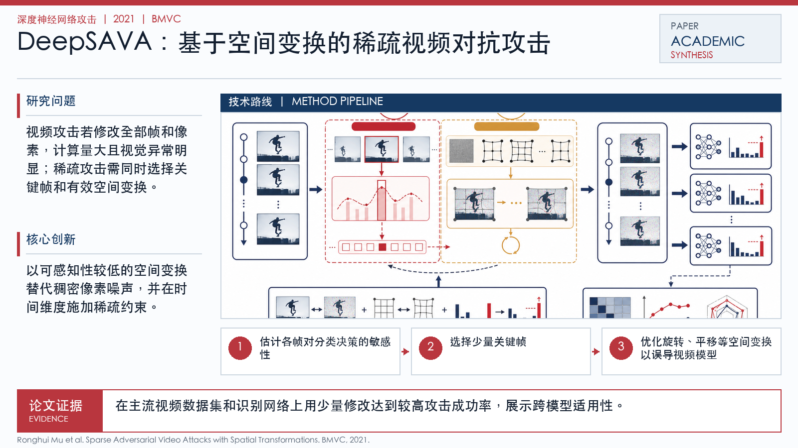

Problem
解决的问题
视频攻击若修改全部帧和像素，计算量大且视觉异常明显；稀疏攻击需同时选择关键帧和有效空间变换。
Attacking on DNNs · 2021 · BMVC
Sparse Adversarial Video Attacks with Spatial Transformations
Problem
视频攻击若修改全部帧和像素，计算量大且视觉异常明显；稀疏攻击需同时选择关键帧和有效空间变换。
Value
在主流视频数据集和识别网络上用少量修改达到较高攻击成功率，展示跨模型适用性。
Paper-grounded Academic Summary
该代表页依据原文摘要、贡献段与方法图注生成。方法视觉由 ImageGen 按论文证据逐篇绘制，中文研究问题、技术路线、创新点与实验结论采用确定性排版，以保证内容与字符准确。
打开原文 PDF
Technical Route
Innovation